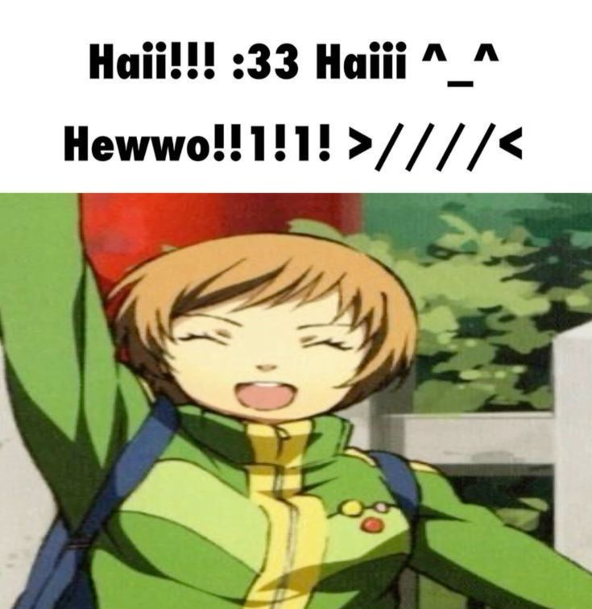

Добро пожаловать на мой сайт!
Это многостраничный сайт, так что им можно наслаждаться вдоль и поперёк.

А это Чие Сатонака, мой любимый персонаж игры Persona 4, о которой сегодня пойдёт речь :3
Это многостраничный сайт, так что им можно наслаждаться вдоль и поперёк.
А это Чие Сатонака, мой любимый персонаж игры Persona 4, о которой сегодня пойдёт речь :3